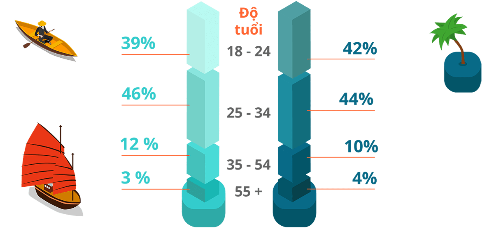
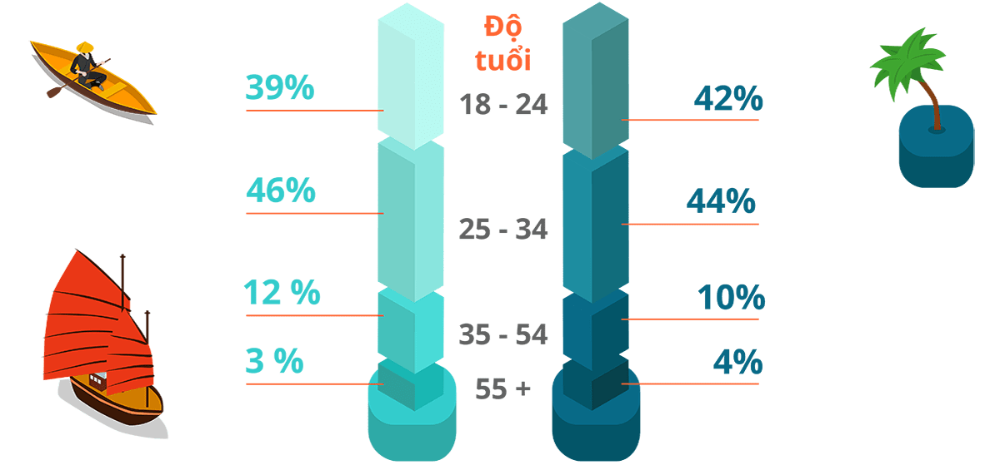
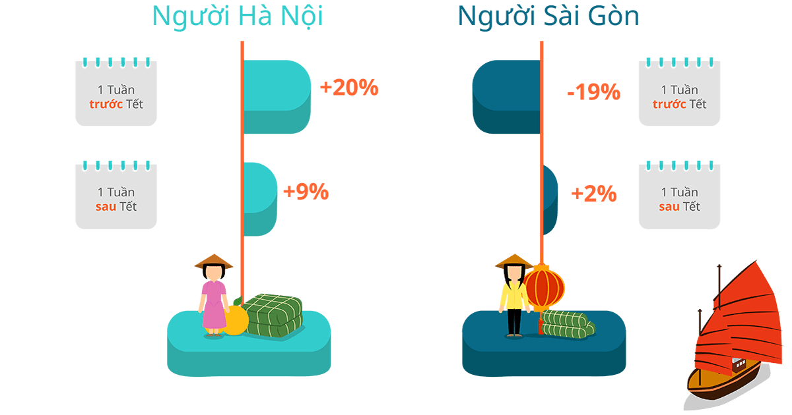
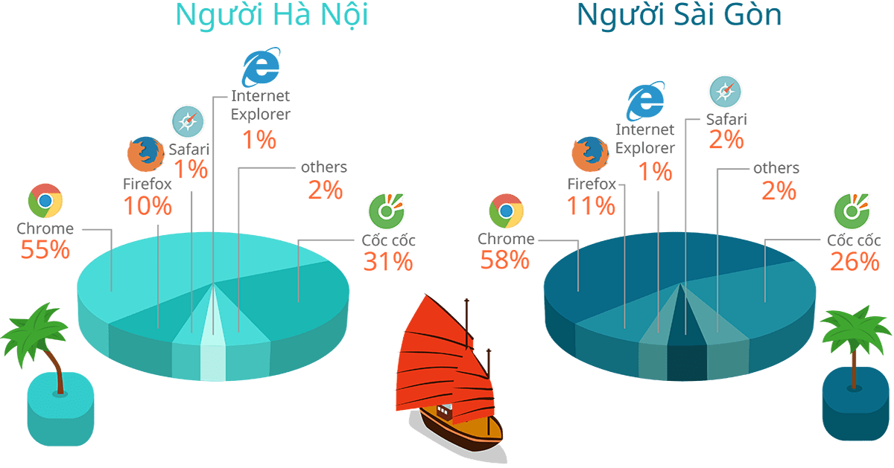

Nằm ở hai đầu tổ quốc, Hà Nội và thành phố Hồ Chí Minh có nhiều đặc trưng khác biệt: từ phong tục, tập quán đến thói quen mua sắm. Nghiên cứu này được chúng tôi thực hiện thông qua việc phân tích 1 triệu lượt truy cập trên iPrice.vn trong năm 2016 nhằm trả lời cho câu hỏi người Hà Nội hay người Sài Gòn có thói quen mua sắm trực tuyến khác biệt như thế nào. Geographically different, Hanoi and Ho Chi Minh city are also culturally different: from the use of language and traditions to lifestyle and habits. Among the differences is how the Hanoians and Saigonese people behave when shopping online. This study aims to explore what are the differences and similarities of Hanoi and Saigon online shoppers and the rationale behind their behavior.
Chân dung người mua sắm trực tuyến, họ là ai? Who are the Hanoians & Saigonese online shoppers?
 

Hà Nội và Sài gòn chia sẻ nhiều điểm chung về đối tượng khách hàng Hanoians and Saigonese have similar online shopper demographics
Số liệu phân tích lấy từ 1 triệu lượt người dùng truy cập vào website bán hàng trực tuyến Data based on 1M traffic of online shoppers
Cùng điểm lại bức chân dung người mua hàng trực tuyến tại hai thành phố có lượng người mua hàng trực tuyến lớn nhất cả nước. Thế hệ Millenials (18-35) chiếm một bộ phận đông đảo số người mua sắm trực tuyến. Ở cả hai thành phố, phụ nữ vẫn là đối tượng chính của mua sắm trực tuyến. First, let’s look at the demographical data of online shoppers in Hanoi and Ho Chi Minh. Broken down to age groups, the largest user base is aged 25-34 years old when it comes to online shopping, followed by students and young working adults aged 18-24. In both cities, women are shown to be the larger demographic as compared to men.
Mặc dù không có sự chênh lệch lớn về đối tượng mua hàng trực tuyến, hành vi mua sắm của người Sài Gòn và người Hà Nội có nhiều nét khác biệt rõ rệt Despite having very similar online shopping profiles, there are vast differences between Hanoi’s and Saigon’s online shoppers.
Ai dành nhiều thời gian trên trang bán hàng trực tuyến nhiều hơn? Who spends more time shopping online?

Số liệu dựa trên thời gian tìm kiếm thông tin sản phẩm trung bình cho một đơn vị sản phẩm Data based on average search time on a single product from desktop
Người Sài Gòn dành nhiều thời gian để tìm kiếm thông tin về sản phẩm hơn người Hà Nội. Nghiên cứu đã cho thấy người Sài Gòn dành hơn 36% thời gian so với người Hà Nội để tìm kiếm sản phẩm. Một trong những nguyên nhân chính là do các nhãn hàng và sản phẩm dễ du nhập vào thành phố Hồ Chí Minh hơn, vì thế người Sài Gòn hiểu họ có nhiều sự lựa chọn. Họ thường có xu hướng dành nhiều thời gian tìm hiểu thông tin sản phẩm hơn trước khi đưa ra một quyết định mua sắm. Research shown that the Saigonese people spend a higher amount of time on researching products and brands. They spend 36% more time on product discovery as compared to Hanoians. This study is backed up by the fact that the Saigonese people are more open to choices than Hanoian shoppers. With the amount of brand penetration in Ho Chi Minh city, it is no wonder that the Saigonese people are getting used to a variety of offers from the growing market economy.
Ai mua sắm nhiều hơn vào trước và sau Tết? Who shops more before and after Tet holiday?
Số liệu dựa trên lượng truy cập vào các trang mua hàng trực tuyến vào thời điểm cận Tết và sau Tết Data based on change of online shoppers before, during and after Tet
Thói quen tiêu dùng dịp Tết- Người Hà Nội: tích cực sắm sửa Who shops more before and after Tet holiday?
Với tâm lí mua để tích trữ cho mấy ngày Tết, người Hà Nội mua sắm nhiều hơn hẳn vào tuần lễ Giáp Tết. Người Hà Nội cũng có thói quen ăn Tết dài hơi hơn Sài Gòn, cho dù tuần lễ Tết có kết thúc thì họ vẫn dành thời gian sau đó để lai rai, tận hưởng Tết. Lượng truy cập vào trang bán hàng trực tuyến của người Hà Nội vẫn có sự gia tăng đáng kể vào tuần lễ sau Tết. Trong khi đó, người Sài Gòn không quá câu nệ chuyện mua sắm trước và sau Tết. Thay vì mua sắm theo đợt như người Hà Nội, người Sài Gòn vẫn giữ nguyên nhịp độ mua sắm của mình.
Big differences appears on how the Nguyen brothers spend during the holiday period. The week before Tet (formally called “Giáp Tết”), there is a stark difference between the Hanoians and Saigonese people. Hanoians proved to spend more time on online shopping the week before (20% increase) and after Tet (9% increase)
The shopping habits of the Hanoians are still heavily influenced by the traditional celebrations of Tet. During Tet holiday, all businesses are closed and the people tend to stay at home, spending time with family. That is the reason why Hanoians tend to shop a lot during the week before Tet to take advantage of holiday sales. On the contrary, the Saigonese people emphasize less on keeping up with customs they do not have the urge to shop for Tet like the Hanoians do
Ai tích cực săn hàng khuyến mãi hơn? Who are the more aggressive promotion hunters?
Số liệu dựa trên lượng truy cập vào các trang mua hàng trực tuyến vào ngày hội mua sắm trực tuyến Black Friday, diễn ra vào 24/11 hàng năm Data based on traffic during Black Friday (biggest online promotion event in Vietnam which happen on 24th Nov each year)
Người Hà Nội mê săn hàng giảm giá hơn Who are the more aggressive promotion hunters?
Vào ngày hội mua sắm trực tuyến Black Friday, lượng truy cập vào các trang bán hàng trực tuyến tăng đột biến ở cả hai thành phố, đặc biệt là ở Hà Nội, cho thấy mức độ nhạy cảm của người Việt về các thông tin khuyến mãi. Nguyên nhân một phần là do người Hà Nội dễ chịu tác động của quảng cáo và hình thức khuyến mãi giảm giá trực tiếp hơn người Sài Gòn, một phần là họ có thói quen mua hàng mỗi khi doanh nghiệp tung ra khuyến mãi. Both city shoppers are excited about promotions. However, Hanoians win over the Saigonese people on shopping battles during promotional periods. During Black Friday, the traffic from the Hanoians and Saigonese people increased by 80% and 67% respectively. This shows how price sensitive Hanoians are during sales seasons, despite of the fact that there are more brands and promotion offerings in Ho Chi Minh city compared to Hanoi.
Trình duyệt web nào phổ biến nhất? Which are the popular browsers used?


Số liệu dựa trên lượng truy cập vào các trang mua hàng trực tuyến qua máy tính Data based on traffic on desktop only
Cốc cốc vượt qua cả Firefox trở thành trình duyệt web phổ biến thứ nhì Which are the popular browsers?
Khi tìm kiếm thông tin sản phẩm trên mạng hoặc trên các trang bán hàng trực tuyến, người tiêu dùng Việt Nam không chỉ sử dụng các trình duyệt web ngoại mà còn ưa thích những trải nghiệm lướt web mang tính địa phương hoá. Số liệu đã cho thấy, Cốc Cốc chiếm một thị phần người dùng không hề nhỏ ở cả hai thành phố (31% Hà Nội và 26% ở Hồ Chí Minh). Sự thành công của Cốc Cốc đã cho thấy rẳng các nhà tiếp thị, muốn đem sản phẩm của mình đến gần đối tượng khách hàng hơn cần tối ưu hoá trải nghiệm tìm kiếm địa phương, để có được kết quả tốt nhất.
Despite difference in shopping habits, Hanoian and Saigonese shoppers share the same expectations for user experience. Cốc Cốc - the Vietnamese browser and search engine became the 2nd most popular search engine in both cities, succeeding Firefox, Safari and Internet Explorer. Local media mentioned that Cốc Cốc is claimed to be the most user-friendly search engine for the Vietnamese with localized features: Vietnamese-type writing, file uploading, and Vietnamese auto-correct.
All in all, differences exist between the Hanoians and the Saigonese people, but they also have a lot of common attributes. Both are very sensitive toward promotions and are nationalistic in their surfing experience. To answer the question as to who is more rational in making online shopping decisions, we must consider their cultures in different contexts.